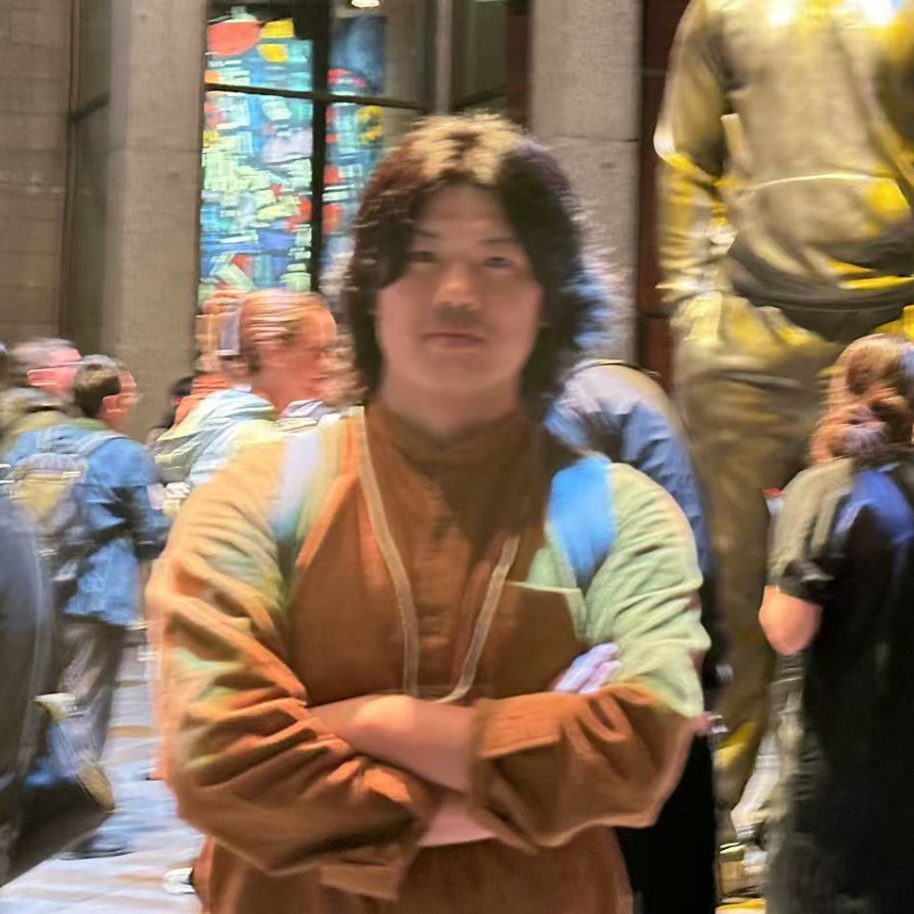

News
Oct. 2025
Our IMWUT paper won the Distinguished Paper Award.
Oct. 2025
Our BodySys paper won the Best Paper Award.
Sept. 2025
Our paper "From Cheap to Chic: Enhancing Music Playback Quality of Budget Earphones via Hardware-Aware Learning" was conditionally accepted by SenSys 2026.
July. 2025
Our paper "Morphology-Aware HRV Estimation from Wrist PPG in Sedentary Scenarios" was accepted by BodySys 2025.
July. 2025
I was selected as an award winner for the SMU Presidential Doctoral Fellowship .
Apr. 2025
I passed the Ph.D. qualifying examination and officially became a Ph.D. candidate.
Nov. 2024
Our research on breathing mode monitoring with earbuds has been highlighted by SMU Corporate Communications, SMU City Perspectives, and The STRAITS TIMES.
Oct. 2024
Our paper "LR-Auth: Towards Practical Implementation of Implicit User Authentication on Earbuds" was accepted by IMWUT 2024.
May. 2024
Our paper "Detecting Foot Strikes during Running with Earbuds" was accepted by BodySys 2024.
Apr. 2024
Our paper "BreathPro: Monitoring breathing mode during running with earables" was accepted by IMWUT 2024.
Jan 2024
I was admitted into the Ph.D. in Computer Science programme as a full-time student commencing in Jan 2024, Singapore Management University .
|  |
Hu Changshuo
Ph.D. Student
Computer Science, SCIS
80 Stamford Road, Singapore 178902
cs.hu.2023@phdcs.smu.edu.sg |
About Me
Hu Changshuo is currently a Ph.D. candidate in Computer Science at Singapore Management University, under the supervision of Professor Ma Dong. His research interests encompass mobile computing and pervasive sensing, with a particular focus on authentication, running monitoring, and interaction using earables.
Education
| Singapore Management University Ph.D. student in Computer Science Jan. 2024 - Now, Singapore Advisor: Prof. Ma Dong |
| University of New South Wales Master in Information System Jan. 2018 - Jan 2020, Sydney, Australia Advisor: Prof. Mahbub Hassan |
| Capital Normal University Bachelor in Computer Science and Technology Sept. 2012 - June 2016, Beijing, China |
Publications
|
|
From Cheap to Chic: Enhancing Music Playback Quality of Budget Earphones via Hardware-Aware Learning
Changshuo Hu*, Manh Pham Hung*, Ting Dang, Jiannan Li, Rajesh Balan, Dong Ma ACM/IEEE International Conference on Embedded Artificial Intelligence and Sensing Systems |
|
|
Morphology-Aware HRV Estimation from Wrist PPG in Sedentary Scenarios
Changshuo Hu*, Manh Pham Hung*, Dong Ma 11th Workshop on Body-Centric Computing Systems, Co-located with UbiComp / ISWC 2025 Best Paper Award |
|
|
LR-Auth: Towards Practical Implementation of Implicit User Authentication on Earbuds
Changshuo Hu, Xiao Ma, Xinger Huang, Yiran Shen, Dong Ma Proceedings of the ACM on Interactive, Mobile, Wearable and Ubiquitous Technologies, 2024 Distinguished Paper Award |
|
|
Detecting Foot Strikes during Running with Earbuds
Changshuo Hu, Thivya Kandappu, Jake Stuchbury-Wass, Yang Liu, Anthony Tang, Cecilia Mascolo, Dong Ma 10th Workshop on Body-Centric Computing Systems, Co-located with ACM MobiSys 2024 |
|
|
BreathPro: Monitoring Breathing Mode during Running with Earables
Changshuo Hu, Thivya Kandappu, Yang Liu, Cecilia Mascolo, Dong Ma Proceedings of the ACM on Interactive, Mobile, Wearable and Ubiquitous Technologies, 2024 |
|
|
Lightweight and Non-Invasive User Authentication on Earables
Changshuo Hu, Xiao Ma, Dong Ma, Ting Dang Proceedings of the 24th International Workshop on Mobile Computing Systems and Applications, 2023 |
|
|
Recognizing hand gestures using solar cells
Dong Ma, Guohao Lan, Changshuo Hu, Mahbub Hassan, Wen Hu, Mushfika B Upama, Ashraf Uddin, Moustafa Youssef IEEE Transactions on Mobile Computing, 2022 |
|
|
Data Communication using Switchable Privacy Glass
Changshuo Hu, Dong Ma, Mahbub Hassan, Wen Hu 19th ACM/IEEE International Conference on Information Processing in Sensor Networks (IPSN), 2020 |
|
|
NLC: natural light communication using switchable glass
Changshuo Hu, Dong Ma, Mahbub Hassan, Wen Hu IEEE INFOCOM 2020-IEEE Conference on Computer Communications Workshops (INFOCOM WKSHPS) |
Community Services
|
|
Teaching Assistants
| IS460: Machine Learning and Applications AY2025-26 Term 1 |
Honors
| SMU Presidential Doctoral Fellowship , AY2025 |
| PhD Full Scholarship, AY2024 |